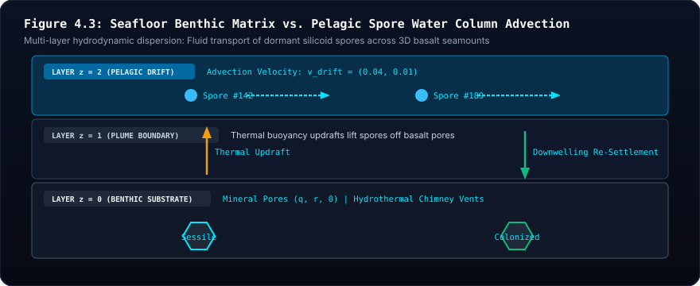

🌊 Phase 5: Pelagic Planktonic Detachment, Spore Dispersal & God-Suite Guide #
The Oceanic Transition: From Sessile Benthic Mound Colonizers to Drifting Pelagic Life
1. Visceral Motivation: The Broadcast Spawning of the Abyssal Seamount #
In terrestrial and marine biology, sessile organisms anchored to rocky substrates—corals, sponges, bryozoans, and kelp—face a fundamental existential bottleneck: spatial crowding. Once all contiguous rock crevices on a hydrothermal mound are occupied by living cells or mineralizing detritus, local division halts. Without dispersal, an entire colony risks catastrophic local extinction if their host vent shifts or cools.
Nature's solution is broadcast spawning and pelagic spore dispersal:
- Mature organisms package daughter genomes into buoyant, dormant spore capsules.
- Spores detach from the rock wall and launch into the permeable water column.
- Hydrothermal convection plumes and ambient oceanic currents carry spores across abyssal distances.
- When a spore encounters an unoccupied volcanic ridge or caldera terrace, it binds to the mineral substrate, reactivates its metabolic workshop, and founds a new benthic colony.

### 🔬 Pedagogical Breakdown: Figure 5.1 — 3D Marine Stratification & Pelagic Advection
- Visual Guide: Cross-section of the 3D hydrothermal seafloor showing benthic rock pores at $z=0$, thermal convection updrafts rising through $z=1$, and horizontal pelagic fluid currents transporting dormant spore capsules across abyssal distances at $z=2$.
- Biophysical Reality: Sessile marine organisms (corals, barnacles, vent tube worms) rely on broadcast spawning to escape local resource depletion and colonize distant geothermal vents across hostile oceanic trenches.
- Digital Mapping: In Siliquarium, saturated cells ($E_{\text{battery}} = 100$) launch daughter spores into the permeable water column (
AQUEOUS_FLUID). Spores drift with discrete $O(1)$ fluid advection until binding an unoccupied rock pore or decaying.- Core Principle: Dispersal rescues ecosystems from spatial gridlock. The fluid column provides the transport medium that transforms isolated benthic pockets into a globally connected meta-population.
2. Mathematical Architecture: Discrete $O(1)$ Advection #
2.1 The Permeable Water Column #
Rather than introducing heavy continuous rigid-body physics engines with floating-point drift and $O(N^2)$ collision detection, Siliquarium models marine detachment discretely in the stacked 3D hexagonal lattice $(q, r, z)$:
- Bedrock & Chimney (
PoreMedium.ROCK_SUBSTRATE): The $z=0$ benthic floor and central volcanic chimney spires ($z \ge 1, q^2+r^2+qr \le 1$) form permanent solid mineral substrates. - Aqueous Column (
PoreMedium.AQUEOUS_FLUID): Hexagonal cells surrounding the chimney at $z \ge 1$ are permeable fluid parcels.
2.2 The Dispersal & Advection Operator #
When an adult silicoid reaches division thresholds ($E \ge 100, M \ge 20$) but all adjacent substrate pores are occupied, it synthesizes a pelagic spore capsule:
$$\vec{x}_{\text{spore}}(t+1) = \vec{x}_{\text{spore}}(t) + \vec{v}_{\text{plume}} + \vec{v}_{\text{drift}}$$
$$\tau_{\text{lifespan}}(t+1) = \tau_{\text{lifespan}}(t) - 1$$
### 🔍 Equation Decoder
- $\vec{x}_{\text{spore}}(t)$: Current 3D hexagonal coordinate of the drifting spore.
- $\vec{v}_{\text{plume}}$: Upward convective velocity vector induced by the hydrothermal nozzle thermal gradient.
- $\vec{v}_{\text{drift}}$: Planar rotational current vector carrying the spore to adjacent fluid hexes.
- $\tau_{\text{lifespan}}$: Metabolic survival clock ($\tau_0 = 25$ ticks). If $\tau = 0$ before settling, the spore lyses into mineral detritus, strictly satisfying energy/mass conservation:
$$\Delta E_{\text{dissipated}} = E_{\text{spore}}, \quad \Delta M_{\text{sediment}} = M_{\text{spore}}$$
3. Real Phenotypic Circuit Magnification: Zero Mock Data #
In Phase 5, in-situ 3D cell visualization reflects the actual phenotypic netlist of each organism:
- Exact Gate Labels: The 3D micro-chamber displays only the decoded gates present in the cell's active netlist (
NOT,AND,OR,XOR,BUF). Primitive diffusion cells without logic gates display only their pulsing golden Fibonacci genome spiral—eliminating artificial gate illusions. - Visual Targeting Beacon: Selecting a pore casts an illuminated vertical holographic beacon beam rising through the water column with a pulsing targeting reticle, ensuring researchers can instantly track specimens across wide seamounts.
- Crystal-Clear Water Column: Empty aqueous cells are rendered with near-total optical transparency ($\alpha = 0.015$), giving researchers unobstructed line-of-sight to the seabed floor, volcanic chimney spires, and drifting bioluminescent spores.
4. God-Suite Interactive Controls #
Researchers can perturb and stimulate the ecosystem in real time via the Lab Flyout drawer:
| Control | Mechanism | Evolutionary Pressure Provoked |
|---|---|---|
| 🔥 Hydrothermal Surge Pulse | Injects $+200$ energy tokens into the vent plume. | Tests explosive metabolic capture and rate-dependent division. |
| 💥 Local Extinction Pulse | Induces localized cell lysis in a chosen radius. | Creates vacant ecological niches to test recolonization via pelagic spores. |
| ⚡ Re-Seed Primordial Soup | Injects randomized prebiotic RNA/silicon genome tapes. | Tests competition between ancestral lineages and de novo invaders. |
| ⚙️ Mutation Rate Tuning | Live slider adjusting error rate per bit ($0.05\%$ to $5.0\%$). | Explores Eigen's Error Threshold and neutral drift dynamics. |
5. Verification & Academic Invariants #
- Closed-Universe Conservation Invariant: All spore synthesis, drift, settlement, and expiration strictly adhere to the First Law of Thermodynamics:
$$\Delta E_{\text{universe}} = 0.000, \quad \Delta M_{\text{universe}} = 0.000$$
- 13-Stage Comprehensive Test Suite: Phase 5 is verified across all 13 test stages in under 70 milliseconds.